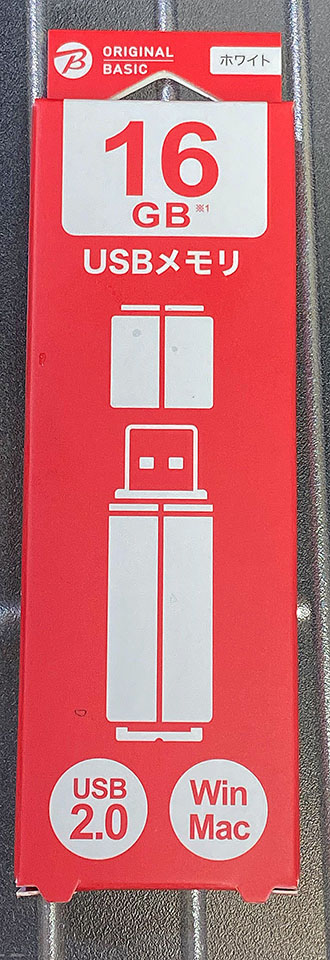
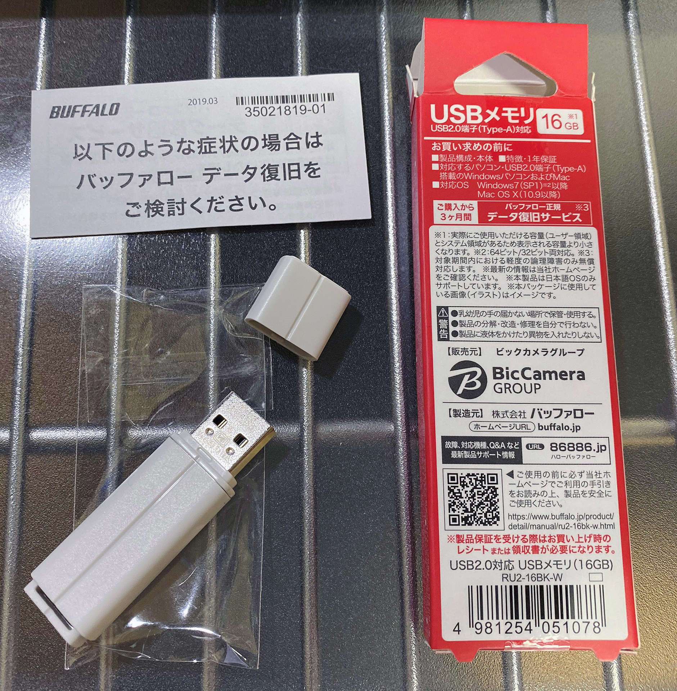
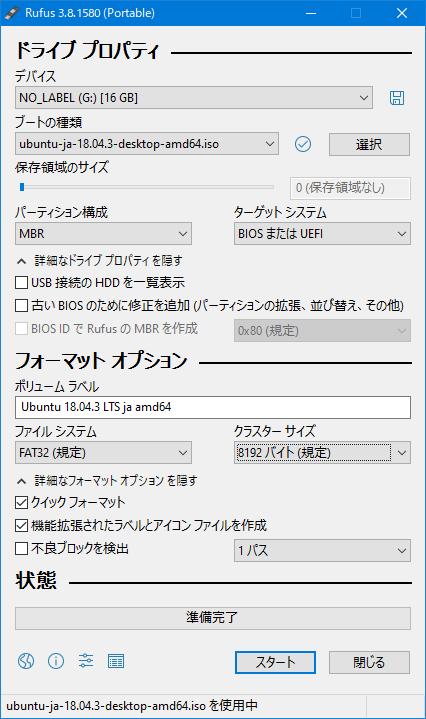
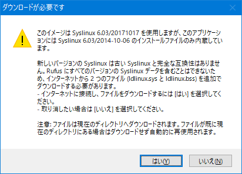
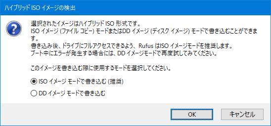
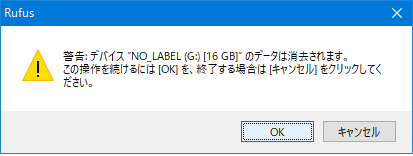
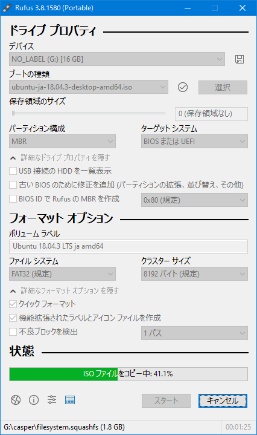
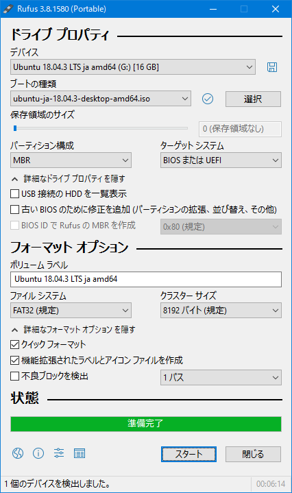

Ubuntu をインストールするためのライブ USB メモリを作成する
Linux 専用マシンにしようと思って購入した ThinkPad X250。元々 HDD が内蔵されていたが、先日コレを SSD に換装した。元の HDD と SSD との間ではミラーリングやデータ同期等はしていないので、装着した SSD は空っぽだ。
今回は、この空っぽの SSD に Ubuntu をインストールするための「ライブ USB メモリ」を作成していく。
目次
ライブメディアとは
Ubuntu の「ライブメディア」とは、CD や USB メモリなどに Ubuntu の試用環境とインストーラを入れておいて使用するモノを指す。
Windows が搭載されているようなマシンに「ライブ USB メモリ」を挿して、USB メディアを先に読み込んでブートするような BIOS 設定にしておけば、その USB メモリ内の Ubuntu が起動するという仕組みになっている。
コレでまずは自分の PC に Ubuntu を入れたらどんな具合になるか、ストレージとの相性をチェックしたりして、確認が終わったらインストーラを起動する、という流れで使うと良いだろう。
USB メモリを購入する
ライブ USB メモリを作るには、2GB 以上の容量がある USB メモリが必要だ。念のため 4GB 程度の USB メモリがあれば十分だが、最近はそんな小さい容量の USB メモリが逆に売っていなくて、自分は 16GB の格安 USB メモリをビックカメラで買った。

一応中身は Buffalo 製。800円程度。



Ubuntu のディスクイメージをダウンロードする
それでは、USB メモリに書き込む Ubuntu のディスクイメージを準備しよう。
自分は今回、Ubuntu Desktop 18.04.3 LTS 日本語 Remix というイメージを使うことにした。
- Ubuntuの日本語環境 | Ubuntu Japanese Team … 公式ページトップ
このイメージは、オリジナルの Ubuntu 18.04.3 (本校執筆時点で最新版の LTS) に、日本語環境を追加したモノだ。最初から日本語での動作環境が整えられているらしいので、環境構築が楽になるかなーと思い選択した。
上のページから ubuntu-ja-18.04.3-desktop-amd64.iso というファイルをダウンロードする。ファイルサイズは 2GB 弱だ。
専用ソフトで USB メモリにディスクイメージを書き込む
ISO ファイルをダウンロードしたら、USB メモリにこのファイルをコピー…すれば良いワケではない。専用のソフトを使って書き込んでやらないと、ライブ USB メモリとしては動作しないのだ。
今回は Windows 用の Rufus という有名なフリーソフトを使用する。
本校執筆時点では Rufus v3.8 が最新版。Rufus v3.8 Portable (ポータブル版) である rufus-3.8p.exe をダウンロードした。
exe ファイルを開いてソフトを解凍し、Rufus を開く。
ネット上の記事では古いバージョンの Rufus を使っていて、スクショどおりの設定項目が見当たらないかもしれない。自分は Rufus 公式サイトのトップにあるスクショを参考に、次のように設定した。

- デバイス : USB メモリを挿入し選択する
- ブートの種類 : 先程ダウンロードした
ubuntu-ja-18.04.3-desktop-amd64.iso - パーティション構成 : MBR
- ターゲットシステム : BIOS または UEFI
- 詳細オプションを表示する
- ボリュームラベル : お任せのまま
- ファイルシステム : FAT32 (規定)
- クラスターサイズ : 8192バイト (規定)
- Rufus 公式サイトのスクショは「4096バイト (規定)」が選択されていたが、自分が使った USB メモリだと8192バイトが規定になっていたので、規定のまま設定を変えずに進めた
というワケで基本的にデフォルトのままで OK。「スタート」ボタンを押すと警告ダイアログが出るが、全てそのまま進めていくと、書き込みがスタートする。




プログレスバーが「準備完了」になったら書き込み完了。「閉じる」ボタンを押下して閉じて良い。

以上
今回はライブ USB メモリを作成するところまで。
次回はいよいよ ThinkPad X250 に Ubuntu をインストールしていこうと思う。